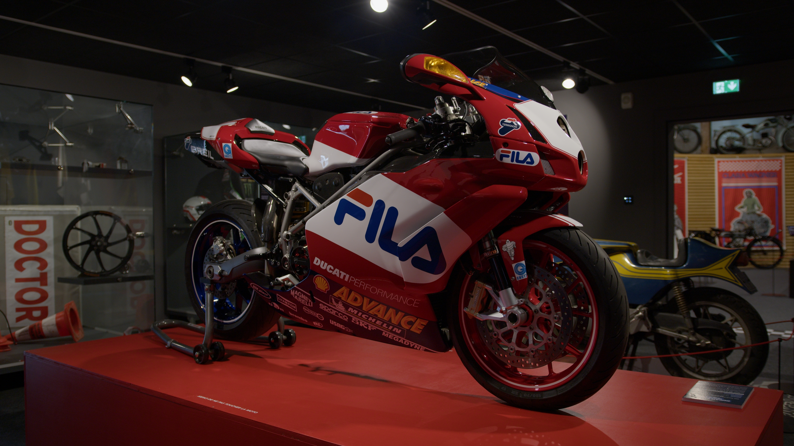
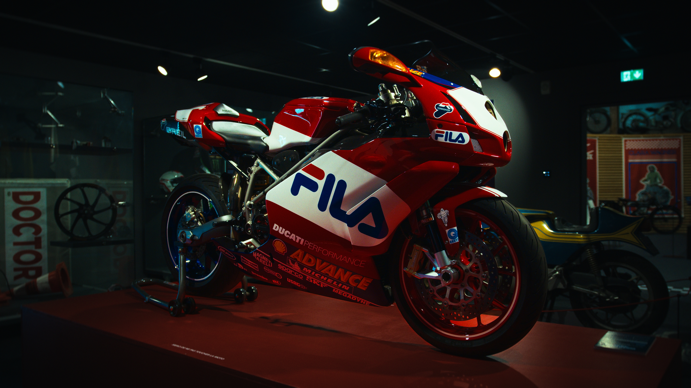
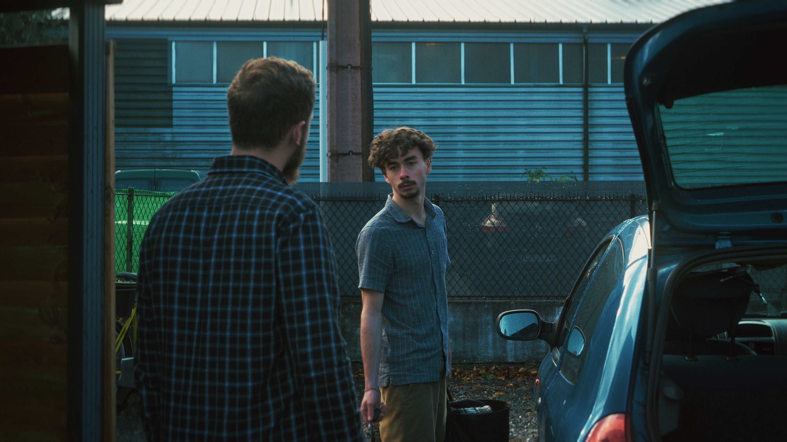
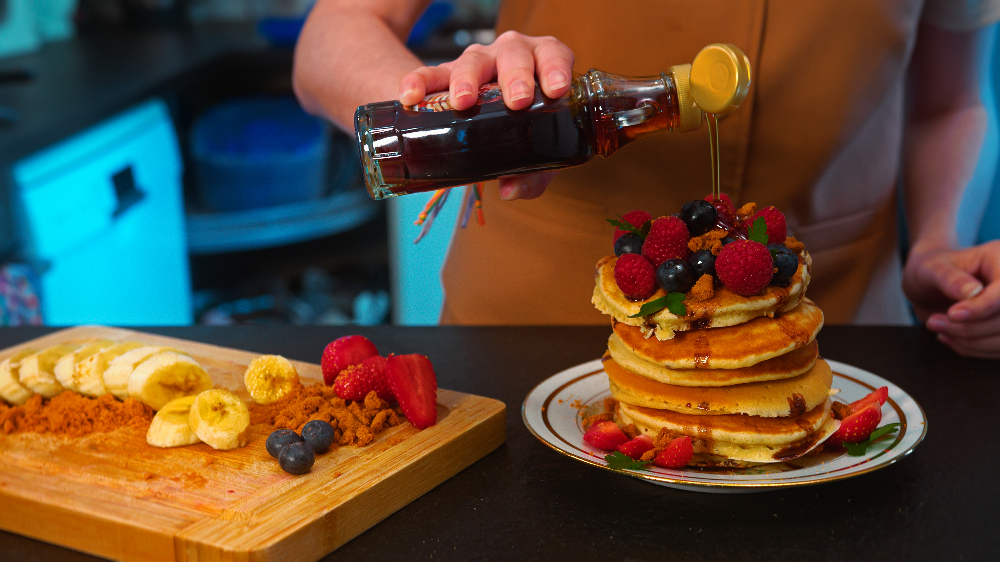

Avant / Après
Before / After Grading
Glissez pour comparer l'image brute et l'image étalonnée.


BEFORE AFTER

BEFORE AFTER

BEFORE AFTER// DaVinci Resolve · Color Grading · Look Development
Je donne une identité visuelle forte à vos images. Films, clips, publicités — chaque image est traitée avec une approche sur mesure, inspirée du cinéma et des standards des productions modernes.
Quelques aperçus de mes étalonnages — plein format.
Glissez pour comparer l'image brute et l'image étalonnée.


BEFORE AFTER

BEFORE AFTER

BEFORE AFTERJe suis étalonneur vidéo spécialisé dans la création de look et d'émotions à travers la couleur.
J'aide les réalisateurs, marques et créateurs à donner une identité visuelle forte à leurs images. Mon travail se concentre sur la lumière, le contraste et la cohérence des couleurs afin de créer une ambiance unique et narrative.
Chaque projet est traité avec une approche sur mesure, inspirée du cinéma et des standards des productions modernes.